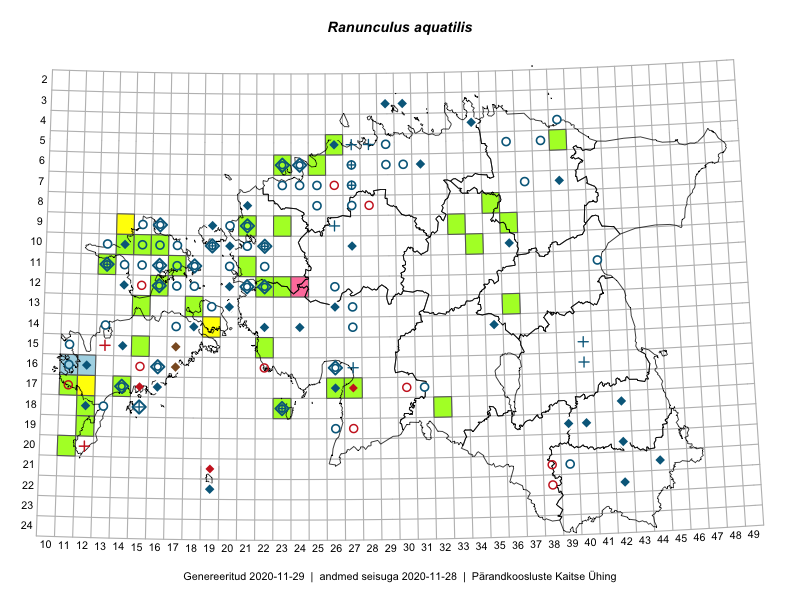

Ranunculus aquatilis
Uuendatud: 2016-12-02
Kaardile koondatud taksonid: Ranunculus aquatilis L.

Kaart põhineb 11 kirjel, neist vaatlusi 10 ja eksemplare 1. Taksonit on leitud 9 ruudust.
Viited andmebaasikirjetele
- Thea Kull, Meeli Mesipuu: 2015-08-12: 19-44: ala
- Eeva-Maria Jeletsky, Tarmo Niitla: 2015-06-17: 11-17: ala
- Eeva-Maria Jeletsky, Tarmo Niitla: 2015-06-20: 11-17: ala
- Oliver Parrest: 2015-08-15: 20-12: ala
- Kaili Orav, Silvia Pihu: 2015-06-19: 05-39: ala
- Jana-Maria Habicht, Ester Valdvee, Kirke Pilvik: 2015-07-14: 08-35: ala
- Maret Gerz, Liina Oja: 2016-06-14: 24-39: ala
- Eeva-Maria Jeletsky, Tarmo Niitla: 2016-07-14: 10-17: ala
- Thea Kull, Raivo Kalle, Susanna Vain: 2016-07-21: 12-32: ala
- Aat Sarv, Oliver Parrest: 2016-07-18: 14-24: ala
- Jana-Maria Habicht: 2015-07-15: 08-35: GPS punkt